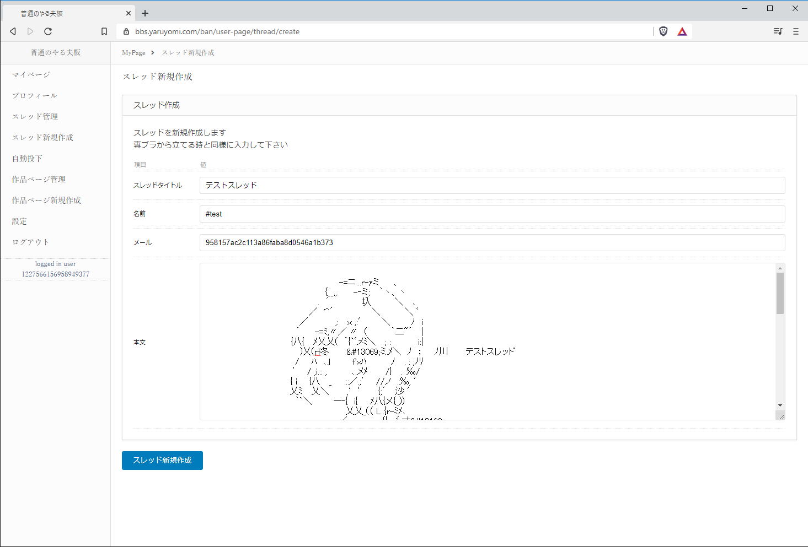
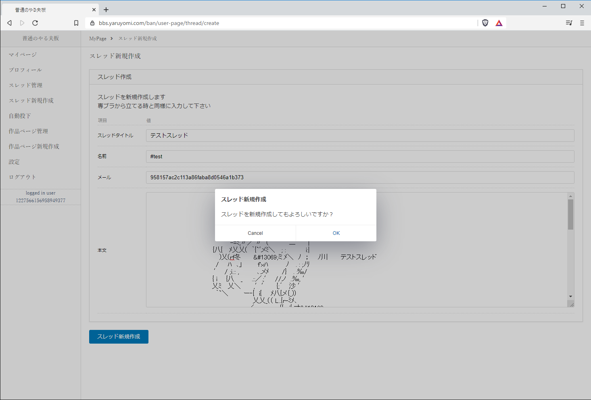
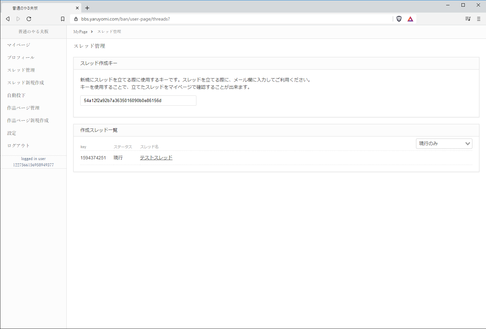

3. スレッドの作成方法¶
3.1. 「スレッド新規作成」ページを表示¶
ユーザーページへログインし、「スレッド新規作成」を押下します。
専用ブラウザから作成するのと同様に、以下を入力します。
項目 |
説明 |
|---|---|
スレッドタイトル |
スレッドのタイトルです。 |
名前 |
投稿者の名前です。 |
メール |
メール欄です。ユーザーページから作成する場合はスレッド作成キーが入力されており変更はできません。 |
本文 |
1レス目の内容です。画像化されスレッド一覧ページなどに表示されます。 |
3.2. 新規作成¶
入力後、下部にある「スレッド新規作成」ボタンを押下します。
確認ダイアログが表示されますので、「OK」を押下します。
スレッドの作成が完了するとメッセージが表示されます。
この時、エラーが表示された場合はエラー内容に従って入力内容を修正して下さい。
もし、「その他のエラー」といったエラーの内容がわからないメッセージが表示された場合は、再度お試しいただくか管理人に連絡下さい。
3.3. 作成完了¶
作成完了後、自動的に「スレッド管理」ページへ遷移します。
作成したスレッドが表示されていることを確認して下さい。